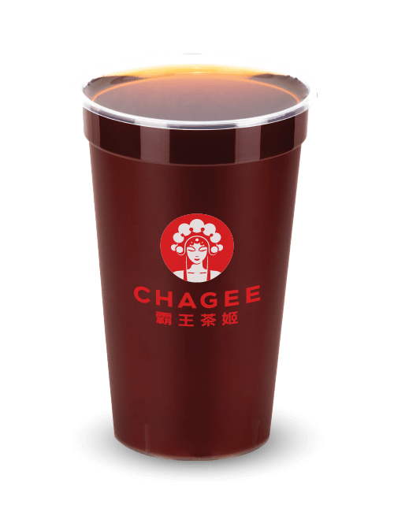

-
酌红袍
Da Hong Pao Tea
沉迷于酌红茶的甜味回味中，搭配独一无二的兰花香气，让您的心情平静。是下午茶会的完美伴侣。
-
云中绿
Glutinous Green Tea
采用云南产茶叶为原料焙制而成，汤色黄绿，口感醇厚，具有独特的糯米香味，滋味持久，回味无穷。
-

醉云南
Yunnan Puer Tea
花香、苦涩、甜美、醇厚,都是云南普洱茶的所有品质。云南普洱茶适合在早上饮用，促进一天的心情。
沉迷于酌红茶的甜味回味中，搭配独一无二的兰花香气，让您的心情平静。是下午茶会的完美伴侣。
采用云南产茶叶为原料焙制而成，汤色黄绿，口感醇厚，具有独特的糯米香味，滋味持久，回味无穷。
花香、苦涩、甜美、醇厚,都是云南普洱茶的所有品质。云南普洱茶适合在早上饮用，促进一天的心情。